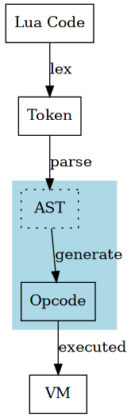

generator
上一章尝试单独解析语法分析过程，本章关注具体的代码生成过程。

1 function vs proto vs closure
在具体深入代码生成之前，先来区分三个概念，function proto 和 closure。
function，是 lua 语言中定义的概念，是 8 种基础类型之一，表示函数，
具体在 lua 代码中用关键字 function 来定义。
如同 string 概念在底层由 TString 结构来实现一样， function 在底层用 Proto 结构来实现，是 function 整体编译之后得到的同语义结构。
编译得到的 Proto 是静态的，在实际运行的时候，需要封装为 Closure 结构，交由 vm 来执行。 Closure 为 upvalue 分配了空间，并统一表示了 c function 和 lua function。
这也是为什么在 object 章节，提到基础类型对应的实现结构时，用 Closure 而不是用 Proto 来表示 function。
所以在编译时期，我们关注 Proto，而在运行时期，才关注 Closure。
1.1 chunk
lua 内部使用了一种巧妙的实现，在编译时，将整个文件当做一个匿名 function 来对待。
相当于文件头加了 function () ，文件尾加了 end 。
383: Proto *luaY_parser (lua_State *L, ZIO *z, Mbuffer *buff, const char *name) { 384: struct LexState lexstate; 385: struct FuncState funcstate; 386: lexstate.buff = buff; 387: luaX_setinput(L, &lexstate, z, luaS_new(L, name)); 388: open_func(&lexstate, &funcstate); 389: funcstate.f->is_vararg = VARARG_ISVARARG; /* main func. is always vararg */ 390: luaX_next(&lexstate); /* read first token */ 391: chunk(&lexstate); 392: check(&lexstate, TK_EOS); 393: close_func(&lexstate); 394: lua_assert(funcstate.prev == NULL); 395: lua_assert(funcstate.f->nups == 0); 396: lua_assert(lexstate.fs == NULL); 397: return funcstate.f; 398: }
可以看到， luaY_parser 读取文件，最终生成并返回 Proto * 。
因为整体分析的入口是 chunk，lua 又将文件当做匿名函数来对待， 这也是很多 lua 书籍中提到 chunk 的原因，表示文件编译得到的结果。
1.2 embeded
如果按照 function 和 Proto 一一对应的关系，会出现函数层级的问题。
比如下面的示例代码，
function a() function b() end end function c() function d() end function e() end end
如果将 lua 代码文件看作 Proto chunk，代码中定义的 a b c d 同样是 function 且编译为 Proto。 但是 function a b c d e 是 lua 代码的一部分，所以其 Proto 也应该被包含在 Proto chunk 中。
lua 内部根据 function 定义的位置，来记录这种包含关系。

function a c 直接定义在代码文件（顶层匿名函数）中， b d e 则直接定义在 a 和 c 中。

Proto 结构中使用 struct Proto * 数组 p（Line 235）来记录其直接包含的 Proto。
228: /* 229: ** Function Prototypes 230: */ 231: typedef struct Proto { 232: CommonHeader; 233: TValue *k; /* constants used by the function */ 234: Instruction *code; 235: struct Proto **p; /* functions defined inside the function */ 236: int *lineinfo; /* map from opcodes to source lines */ 237: struct LocVar *locvars; /* information about local variables */ 238: TString **upvalues; /* upvalue names */ 239: TString *source; 240: int sizeupvalues; 241: int sizek; /* size of `k' */ 242: int sizecode; 243: int sizelineinfo; 244: int sizep; /* size of `p' */ 245: int sizelocvars; 246: int linedefined; 247: int lastlinedefined; 248: GCObject *gclist; 249: lu_byte nups; /* number of upvalues */ 250: lu_byte numparams; 251: lu_byte is_vararg; 252: lu_byte maxstacksize; 253: } Proto;
1.3 FuncState
在 lua 的语法分析中，function 解析是一个重要的部分。
EBNF 和 regex 的区别在于，EBNF 可以描述一种递归过程，而 regex 则不能。
chunk 作为解析 function 的入口，得到 Proto，这个过程在遇到 function 定义时，不断的递归调用，生成 Proto， 并按照层级链接起来。
在了解这个过程之前，要先介绍另一个重要的结构 FuncState 。
57: /* state needed to generate code for a given function */ 58: typedef struct FuncState { 59: Proto *f; /* current function header */ 60: Table *h; /* table to find (and reuse) elements in `k' */ 61: struct FuncState *prev; /* enclosing function */ 62: struct LexState *ls; /* lexical state */ 63: struct lua_State *L; /* copy of the Lua state */ 64: struct BlockCnt *bl; /* chain of current blocks */ 65: int pc; /* next position to code (equivalent to `ncode') */ 66: int lasttarget; /* `pc' of last `jump target' */ 67: int jpc; /* list of pending jumps to `pc' */ 68: int freereg; /* first free register */ 69: int nk; /* number of elements in `k' */ 70: int np; /* number of elements in `p' */ 71: short nlocvars; /* number of elements in `locvars' */ 72: lu_byte nactvar; /* number of active local variables */ 73: upvaldesc upvalues[LUAI_MAXUPVALUES]; /* upvalues */ 74: unsigned short actvar[LUAI_MAXVARS]; /* declared-variable stack */ 75: } FuncState;
从名称可以看出，和 LexState 相似，也用于记录中间状态。 FuncState 用于记录 function 分析过程中的状态，和 function 定义一一对应， 每遇到一个 function 定义时，lua 都会新建一个 FuncState，记录当下解析 function 的中间状态。
1.4 big picture
LexState FuncState Proto 这三者在分析过程中协同生成最终的 Proto。
比如解析如下示例代码，
1: function a() 2: function b() 3: end 4: end
在整体文件分析开始之前，parser 已经准备好 FuncState，通过 LexState.ls 索引， FuncState.f 指向相应要生成的 Proto。
解析第 1 行之后，需要函数定义 a，parser 生成新的 FuncState，并更新 ls.fs 的指向。 同时，fs a 通过 prev 指向 fs chunk，表示层级关系。
第 2 行，遇到函数 b 定义，同样的，生成 FuncState 并更新 ls.fs 的指向。

第 3 行，函数 b 定义结束，此时 ls.fs 指向 fs b 的 prev，回到上个函数定义层级。 并将函数 b 生成的 Proto 链接到上层函数 a 的 Proto。
此时，fs b 已经结束其作用。


第 4 行，函数 a 定义结束，同上，更新 ls.fs 指向，并链接 Proto a 到 Proto chunk。

最终返回 Proto chunk，ls 和 fs 都已经结束其使命，毕竟它们的作用只用于记录中间状态
在 parser 内部，上面描述的过程发生在 open_func() close_func() 中，读者可仔细体会其细节。
328: static void open_func (LexState *ls, FuncState *fs) { 329: lua_State *L = ls->L; 330: Proto *f = luaF_newproto(L); 331: fs->f = f; 332: fs->prev = ls->fs; /* linked list of funcstates */ 333: fs->ls = ls; 334: fs->L = L; 335: ls->fs = fs; 336: fs->pc = 0; 337: fs->lasttarget = -1; 338: fs->jpc = NO_JUMP; 339: fs->freereg = 0; 340: fs->nk = 0; 341: fs->np = 0; 342: fs->nlocvars = 0; 343: fs->nactvar = 0; 344: fs->bl = NULL; 345: f->source = ls->source; 346: f->maxstacksize = 2; /* registers 0/1 are always valid */ 347: fs->h = luaH_new(L, 0, 0); 348: /* anchor table of constants and prototype (to avoid being collected) */ 349: sethvalue2s(L, L->top, fs->h); 350: incr_top(L); 351: setptvalue2s(L, L->top, f); 352: incr_top(L); 353: } 354: 355: 356: static void close_func (LexState *ls) { 357: lua_State *L = ls->L; 358: FuncState *fs = ls->fs; 359: Proto *f = fs->f; 360: removevars(ls, 0); 361: luaK_ret(fs, 0, 0); /* final return */ 362: luaM_reallocvector(L, f->code, f->sizecode, fs->pc, Instruction); 363: f->sizecode = fs->pc; 364: luaM_reallocvector(L, f->lineinfo, f->sizelineinfo, fs->pc, int); 365: f->sizelineinfo = fs->pc; 366: luaM_reallocvector(L, f->k, f->sizek, fs->nk, TValue); 367: f->sizek = fs->nk; 368: luaM_reallocvector(L, f->p, f->sizep, fs->np, Proto *); 369: f->sizep = fs->np; 370: luaM_reallocvector(L, f->locvars, f->sizelocvars, fs->nlocvars, LocVar); 371: f->sizelocvars = fs->nlocvars; 372: luaM_reallocvector(L, f->upvalues, f->sizeupvalues, f->nups, TString *); 373: f->sizeupvalues = f->nups; 374: lua_assert(luaG_checkcode(f)); 375: lua_assert(fs->bl == NULL); 376: ls->fs = fs->prev; 377: /* last token read was anchored in defunct function; must reanchor it */ 378: if (fs) anchor_token(ls); 379: L->top -= 2; /* remove table and prototype from the stack */ 380: }
1.5 FuncState vs Proto
FuncState 和 Proto 作为分析过程中两个最重要的结构，值得详细做一番了解。
仔细观察两个结构内部的字段，会发现两者之间有紧密的联系，界限很模糊， 都些许记录了分析过程的结果。 关键的差异在于，Proto 只保留最终结果，而 FuncState 记录中间状态。
对应这个原则，来详细探究下两个结构的内部。
先来看 Proto。
228: /* 229: ** Function Prototypes 230: */ 231: typedef struct Proto { 232: CommonHeader; 233: TValue *k; /* constants used by the function */ 234: Instruction *code; 235: struct Proto **p; /* functions defined inside the function */ 236: int *lineinfo; /* map from opcodes to source lines */ 237: struct LocVar *locvars; /* information about local variables */ 238: TString **upvalues; /* upvalue names */ 239: TString *source; 240: int sizeupvalues; 241: int sizek; /* size of `k' */ 242: int sizecode; 243: int sizelineinfo; 244: int sizep; /* size of `p' */ 245: int sizelocvars; 246: int linedefined; 247: int lastlinedefined; 248: GCObject *gclist; 249: lu_byte nups; /* number of upvalues */ 250: lu_byte numparams; 251: lu_byte is_vararg; 252: lu_byte maxstacksize; 253: } Proto;
其中字段分为 3 部分来看
暂不讨论
int *lineinfoTString *sourceint linedefinedint lastlinedefinedGCObject *gclist
元信息
lu_byte numparams，函数的固定参数个数lu_byte is_vararg，函数的可变参数lu_byte maxstacksize，函数运行时，最大使用的栈空间
数组结果
TValue *k，常量表Instruction *code，字节码struct Proto **p，内部其它函数定义struct LocVar *locvars，局部变量信息TString **upvalues，upvalue 信息- 与 len size 相关的字段
对照之前对 vm 执行模型的讨论，code 和 k 就与之对应。
这里一个有意思的区别，在于 size 和 n。
上面提到的 5 个数组，都对应一个 size 字段，用于记录数组的大小。 同时，也对应一个 n 字段，用于记录当前数组已使用的大小（下一个空闲的位置）。
在分析的过程中，数组 size 值记录空间总长度，当空间不足时，会继续扩大分配。 而数组 n 值用于时刻标识下一个空闲索引，记录分析结果并自增，它的值比 size 小。
当最终分析结束时，将 n 值赋值给相应的 size 值，省略多余不用的空间，此时两者才会相同。
如此看来，n 值应该存放在 FuncState 中，但是存在例外的是 lu_byte nups 。

相同的视角，来观察 FuncState。
57: /* state needed to generate code for a given function */ 58: typedef struct FuncState { 59: Proto *f; /* current function header */ 60: Table *h; /* table to find (and reuse) elements in `k' */ 61: struct FuncState *prev; /* enclosing function */ 62: struct LexState *ls; /* lexical state */ 63: struct lua_State *L; /* copy of the Lua state */ 64: struct BlockCnt *bl; /* chain of current blocks */ 65: int pc; /* next position to code (equivalent to `ncode') */ 66: int lasttarget; /* `pc' of last `jump target' */ 67: int jpc; /* list of pending jumps to `pc' */ 68: int freereg; /* first free register */ 69: int nk; /* number of elements in `k' */ 70: int np; /* number of elements in `p' */ 71: short nlocvars; /* number of elements in `locvars' */ 72: lu_byte nactvar; /* number of active local variables */ 73: upvaldesc upvalues[LUAI_MAXUPVALUES]; /* upvalues */ 74: unsigned short actvar[LUAI_MAXVARS]; /* declared-variable stack */ 75: } FuncState;
暂不讨论
Proto *fstruct FuncState *prevstruct LexState *lsstruct lua_State *L
后续讨论
struct BlockCnt *blint lasttargetint jpcint freereg
中间结果
upvaldesc upvalues[LUAI_MAXUPVALUES]unsigned short actvar[LUAI_MAXVARS]- 其它 n 字段
两个数组是定长的，即 size 是固定的， f->nups fs->nactvar 用于对应其 n 字段。


在编译过程中，所得到的结果会不断的存储入上述数组及其它字段中。
2 generate
从某种角度看，编译过程就是规则间的同义转换过程。
代码生成，最终将符合语法规则的 lua 代码，生成为 vm 可执行的同义字节码， 这个过程是隐藏在语法分析下的艺术。
两个规则间可以进行同义转换的连接点，在于对 vm 的共识， 正因为编译器"懂得" vm，知晓字节码的格式与功能，知晓运行时的栈结构， 知晓 k 表 Gbl 表的读取方式，才能生成 vm 可执行的同义字节码。
这种共识贯穿在整个代码生成的过程中。
但是无论编译器如何了解 vm，编译时和运行时还是存在区别的。 代码生成时，只是想象存在一个假想的 vm，它在执行生成的所有结果。
所以代码生成这个过程是最为繁杂的，到 vm 真正运行时反而轻松了，只需要读指令，执行指令就可以了。
阅读代码生成相关的代码，笔者还没有精确地把握住其中的原理，只能提供几个原则给读者参考，
- 总体是语法制导翻译的过程
- 使用后缀方式的生成顺序，比如 a + b 按照 a b + 的顺序来转换生成
- 精确模拟 vm 的运行方式，包括栈运算，Gbl 表及其它
章节结束之后，读者可以多使用调试器分析示例代码，探索其中的奥妙。
3 key concept
在仔细探索代码生成之前，先明确几个在生成过程中的重点。
3.1 variable
从作用域来看，lua 中的变量有 3 类，分别为 local upvalue global ，
三者在底层的实现方式各不相同。
3.1.1 local
local 变量的活动范围（active），开始于在作用域中出现的那一刻，一直到作用域结束， 而作用域是有明显的栈特性的，新开辟作用域时入栈，离开作用域时出栈。
在一个作用域内，local 变量按照声明顺序入栈，离开作用域时全部出栈，变为 inactive 状态。
利用这个特性，lua 在编译时，在 fs 中用 actvar 和 nactvar 时刻记录着当前 active local 变量的状态。
比如如下示例代码，
local a do local b do local c end end do local d do local e end end
在代码分析的不同时刻， fs->actvar 记录的栈状态是这样的，

上面只是粗略描述了 active local 变量的栈状态，而实际在 parser 内部，是通过两个数组来存储的。
数组 fs->actvar 的元素是 unsigned short 类型，只用来记录变量的索引。
索引数组 f->locvars 中的元素，其中元素类型为 struct LocVar * 。
262: typedef struct LocVar { 263: TString *varname; 264: int startpc; /* first point where variable is active */ 265: int endpc; /* first point where variable is dead */ 266: } LocVar;
LocVar 主要记录变量的名字， startpc endpc 在字节码层面记录其活动范围。
3.1.2 upvalue
在 pascal 中，在 outer scope 的变量，可以通过 frame stack 去查找
但是在 lua 中，函数也是一种值，可以四处流转，说不定在什么地方调用 所以其 upvalue 不一定出现在 stack frame 上
对象是带函数的值 闭包是带值的函数
local function outer() local a = 0 local function inner() local b = 0 a = a + 1 return a end inner() return inner end local f = outer() print(f()) print(f()) print(f()) local g = outer() print(g()) print(g()) print(g())
function 作为基础类型之一，可以作为普通变量，参数，返回值，赋值，而四处流转
这种情况下，和 local 作用域机制在一起，就会出现问题
a 的作用域在 outer 内部，同时被 inner 引用并修改，最终 outer 返回 inner
调用 outer，赋值给 f
按照语义，f 应该是内部的 inner func，每次调用都得到 a 的自增值
调用 3 次，得到 1 2 3
问题在于，a 只作用在 outer 内部，而 f 在 outer 外部，已经离开了 a 的作用域， 在这种情况下如何保证语义的正确？
这便是闭包机制的由来，a 对于 inner 而言，不是 local，而是 upvalue 类型。
这也是 lua 中为何 func 不是 func 而是 closure 的原因，func 及 upvalue 组成了 closure， 所有 func 在运行时都封装为 closure 来运行，其中重要的原因就在于分配 upvalue 空间。
再调用 outer，赋值给 g，调用 3 次，得到一样的结果，从中可以得到 upvalue 作用于 active 和 dead 状态的区别。
3.1.3 global
前面提到了 local 变量的作用域，以及 upvalue 出现的原因及解决方法。
其中隐含的一点，外层变量对于内层可见，假如强制设定外层对于内部不可见，便不会有 upvalue 的问题。
对于可见的情况，对于当前引用的变量，自然有一个查找的过程。 和嵌套相反，是层层向上寻找的过程。
变量 在本层可以找到的，为 local 在本层之外可以找到的，为 upvalue 所有层都无法找到的，为 global
global 的概念解决了两个细节问题 为什么顶层的 function 是没有 upvalue 的？ 因为在本层找不到的变量，向上已经没有层级，只能是 global
setfenv 的概念 函数的运行环境，即是 global，在编译的 chunk 运行之前，设定 global 的值， 可以影响内部对 global 值的引用，从而实现不同的运行效果。
在实现中，global 是单独于基层的 closure 存在的，是运行状态的一部分 所以不存在作用域的问题，始终在顶层。
local function outer() a = 10 local function inner() a = a + 1 return a end return inner end local f = outer() print(f(), a) print(f(), a) print(f(), a)
3.2 register
register is stack
parse 生成 bytecode，关于寄存器的使用，只是从表面上生成相应的索引 因为 parser 知道自己使用了哪些寄存器，还有哪些可以使用，这些信息是 运行时的 vm 所不知道的
move a b
但是并不分配寄存器的空间，只是用来调度使用哪个寄存器 因为这是编译时，而不是运行时
local 变量 和 中间结果
3.3 expdesc
递归下降 语法制导 后缀方法 配合 vm opcode 共同作用的结果
exp desc
exp 基本运作单元
desc 描述其属性，是 ast 到 code 的纽带
typedef enum { VVOID, /* no value */ VNIL, VTRUE, VFALSE, VK, /* info = index of constant in `k' */ VKNUM, /* nval = numerical value */ VLOCAL, /* info = local register */ VUPVAL, /* info = index of upvalue in `upvalues' */ VGLOBAL, /* info = index of table; aux = index of global name in `k' */ VINDEXED, /* info = table register; aux = index register (or `k') */ VJMP, /* info = instruction pc */ VRELOCABLE, /* info = instruction pc */ VNONRELOC, /* info = result register */ VCALL, /* info = instruction pc */ VVARARG /* info = instruction pc */ } expkind; typedef struct expdesc { expkind k; union { struct { int info, aux; } s; lua_Number nval; } u; int t; /* patch list of `exit when true' */ int f; /* patch list of `exit when false' */ } expdesc;
- VVOID 什么都不做
- VNIL nil 值
- VTRUE
- VFALSE bool
- VK 在 k 表中的值
- VKNUM 数字字面量
没有 string 类型，因为在读取的过程中，直接将其放入 k 表中，变成 VK 类型了
TODO desc 到 reg 的轨迹追踪？
discharge2reg lcode.c:343
操作的只是 exp 相关的类型
exp 需要解析到值，而 var 需要解析到位置
reg 是目的地
VRELOCABLE 说明 A 本身还不确定，在 discharge 的时候，补全到 A 位置
VNONRELOC 则说明本身已经解析到栈中 或 A 已经正确
| exp desc | gen code |
|---|---|
| VNIL | loadnil |
| VTRUE | loadbool |
| VFALSE | loadbool |
| VK | loadk |
| VKNUM | loadk |
| VRELOCABLE | get its code and change A to reg |
| VNONRELOC | reg != self reg, move; otherwise nothing |
| VVOID | nothing |
| VJMP | nothing |
dischargevars
| exp desc | discharge |
|---|---|
| VLOCAL | to VNONRELOC |
| VUPVAL | gen code GETUPVAL, A is uncertain, to VRELOCABLE |
| VGLOBAL | gen code GETGLOBAL, A is uncertain, to VRELOCABLE |
| VINDEXED | free table and idx, gen code GETTABLE, to VRELOCABLE |
| VCALL | to VNONRELOC, store call code A value |
| VVARARG | set B to 2? to VRELOCABLE |
3.4 how freereg & freeexp works
freereg 的作用
在栈的特性上，更深入的理解
何时分配，何时回收
根据抽象栈演算的顺序来
和 nactvar 的关系
4 ChunkSpy
以实例为基础的探索 基础方法
make spy
make inspect
chunkspy 中 .local .const 的概念对应
; function [0] definition (level 1) ; 0 upvalues, 0 params, 2 is_vararg, 3 stacks .function 0 0 2 3 .local "a" ; 0 .local "b" ; 1 .local "c" ; 2 [1] return 0 1 ; end of function
line 1 level 1 指的是第一层级 function [0] 表明是当前层级的第 1 个函数（以 0 开始索引）
line 2 0 个 upvalue 0 个参数 0b010 接收可变参数 3 需要分配栈容量，2 是最小值，来源于在不断的运算过程中，栈增长减少，遇到的最大值
line 3 和 line 2 相同，2 是 3 的注释
line 4 5 6 .local f->locvars 内容
line 7 f->code 指令 最终一行总是默认生成一条 return 指令 这里只有一条 return，说明代码并没有生成代码
line 8 function 结束注释
5 statement
- 原子性
- 依赖性
- 实例分析
- 生成模式
递归结合是无限的 只讲解 atom ，组合交由读者探索
5.1 function
compile time
enf 结构
body 方便定义匿名函数
func 有同名和匿名两种 从 ebnf 中可以看出，两者只差在 NAME 几乎全部由 body 处理 包含了参数，函数体等全部 动态类型，名称与值的绑定，所以由 body 来处理全部
body 过程不过是参数和 chunk 的递归过程
5.1.1 upval
和 closure 同一级的变量被引用，使用 move 指令 >= 级的变量，使用 getupval 指令
move A B
A 无用，B 指代 local 的 active 栈索引
getupval A B
A 无用，B 指代上层 closure 中 upval 表的序号
getupval 一直向上链，总会找到 local 对应的位置
Q: f 没有明显引用 a，但是但 a 却存在于 f 的 upval 数组中？
A:
singlevar singlevaraux
从底层向上寻找，从 f 向上找到 a，调用 indexupvalue (lparser.c:183) 作为 upval 使用，而非 local，在 index upval 的过程中， 添加到 f 的 upval 表中
新增 upval 并返回 upval 对应的索引
5.1.2 vararg
lobject.h:256
| 4 | 2 | 1 |
|---|---|---|
| NEEDSARG | ISVARARG | HASARG |
在 lua5.0 中，没有 … 的表达式，只能在参数定义时使用
而在内部引用 vararg 时，通过变量 arg 来使用
arg 是一个 table，内部以数组形式存储了 vararg
arg.n 是数组的长度
function foo(a, b, ...) local arg = {...} arg.n = select("#", ...) end
lua5.1 默认有对上面形式的兼容性
NEEDSARG 表明是否在内部构造 arg 的值
ldo.c:215
lua5.1 判断，如果内部出现了 … exp，就不使用 arg， NEEDSARG = 0
lparser.c:756
HASARG 用于在计算 nparam 时很方便，直接使用 & 运算就可以
lparser.c:571
ISVARARG 和 HASARG 应该是相同的？ chunk main func 只有 ISVARARG 标志
无即是 0 chunk func 是 2 不引用 arg 是 3 引用 arg 是 7
存储在 proto
- numparams，vararg 不算一个参数
- isvararg
5.2 local assignment
localstat ::= LOCAL NAME {`,' NAME} [`=' explist] localstat ::= LOCAL FUNCTION NAME body
local function f() end local f = function () end
localstat 有两种情况，func 的情况之后到 function 部分再讨论。 另一种情况是局部变量声明，分为是否赋值两种情况。
localstat vs localfunc
5.2.1 no assignment
local a, b, c
; function [0] definition (level 1) ; 0 upvalues, 0 params, 2 is_vararg, 3 stacks .function 0 0 2 3 .local "a" ; 0 .local "b" ; 1 .local "c" ; 2 [1] return 0 1 ; end of function
考虑如上代码，声明局部变量 a。
没有生成代码，毕竟没有任何运算或者操作
所以只存储了 local 变量的信息
lparser.c:143
registerlocalvar 是操作 f->locvars 的过程
lparser.c:163
new_localvar 是操作 fs->actvar 的过程
先注册，再存储相应的索引
expdesc 为 VVOID，因为没有 exp，没有赋值 e 记录的是最后一个 expr 的属性
nvars = nexps
adjust_assign 进行左右数量的调整
多余空间置为 nil
TODO 因为 luaKnil 的优化过程，没有生成代码
调整了 freereg 的值，是进行中间运算的安排的
adjustlocalvars 调整 nactvar 的值，并设置相应的 startpc
5.2.2 with assignment
- normal
没有赋值，等于 nexps = 0 的最小情况
var exp 的数量关系
exp 多则舍弃 var 多则置 nil
local a, b, c, d, e = 10, "second", nil, true, false
; function [0] definition (level 1) ; 0 upvalues, 0 params, 2 is_vararg, 5 stacks .function 0 0 2 5 .local "a" ; 0 .local "b" ; 1 .local "c" ; 2 .local "d" ; 3 .local "e" ; 4 .const 10 ; 0 .const "second" ; 1 [1] loadk 0 0 ; 10 [2] loadk 1 1 ; "second" [3] loadnil 2 2 [4] loadbool 3 1 0 ; true [5] loadbool 4 0 0 ; false [6] return 0 1 ; end of function
下面来看赋值的情况，3 个变量均衡赋值。
根据语法描述，左侧 var 结束之后，右侧部分都作为 explist 来解析，最终再完成赋值
是典型的后缀形式的语法制导。
这里先不重点讲 explist -> expr 的解析过程，只用几个基本类型，在 lex 阶段就可以确定的。
lparser.c:599
可确定 expr 的描述 v
使用 luaKexp2nextreg
TODO freereg 的指导作用 TODO 为何这样是正确的，什么时候进行回收？
按照 freereg 所指的顺序，依次向上存储
exp2reg freereg
discharge2reg，将 exp 对应到 reg 即 local 中
其中 VKNUM 直接存储入 k 表，生成 loadk 指令，使用 k 索引
TKSTRING 在之前已经变成 VK，加在 k 表中的索引，同样生成 loadk 指令
解析之后，exp 类型变为 VNONRELOC，info 中存储结果所在的寄存器
在这个过程中，已经生成了 相关的 load 指令，到 freereg 的位置 因为 exp 出现的顺序，和 var 出现的顺序对应，巧妙完成了赋值
- k table
通过 numberK 和 stringK 方法
在 addk 过程， fs->h 是一个 table，用于对 f->k 进行反向索引 先在 h 中查找，是否已经有相应索引，可以直接返回 如果没有，则新增一项
fs->nk++
lcode.c:229-278
k 表只存储如下几种常量
- nil
- bool
- number
- string
nil bool 在赋值时并没有使用 loadk，而使用 loadnil loadbool 指令 插入 k 表用在别的地方
- index
- binop
- compare
5.3 nonlocal assignment
exprstat -> assignment stat
5.3.1 global
a, b, c = 10, 20, 30
进入 primaryexp prefixexp 查找的时候，TK NAME 要进行 singlevar 查找
赋值为 VGLOBAL，且 info 存储了名字对应的 k 表索引 和 expkind 的注释不符合？
进入 assignment，按照 ebnf ，本身是嵌套的 进入之前，先将 v prev 设置为 NULL，后面全部链接起来
LHSassign 结构，在 expdesc 的基础上，添加了 prev 指针
在 多个 , 之间的 var 全部链接起来
其中可赋值的类型为 VLOCAL VUPVAL VGLOBAL VINDEXED 由 primaryexp 决定
赋值阶段，在每个递归层次，用 luaKstorevar 来存储
var ex
先 discharge ex 再生成 SETGLOBAL，使用 info 中存储的 k 索引 gbl[kst[info]] = R(A)
luaKexp2anyreg
只需要解析到 reg 就可以，临时使用，赋值之后就废弃
exp 可能是 var，也可能是 值 但是通过 dis var 是保险的
默认依然使用 exp2nextreg，只不过在之前，添加了解析 jump 的部分
exp2nextreg，存储在 freereg 之后
exp2reg，存储到指定 reg
其中解析了 jump 相关的内容
最终成为 VNONRELOC
5.3.2 upvalue
local a = 10 function f() a = 20 end
和 global 相似
5.3.3 indexed
a.b a['b'] 是相同语义
a 必须是 table，语义才正确
gettable 中，之所以使用 RK(C) 这种方法，是因为索引值未必是 constant，也可能是 一个表，一个函数，等其它值，这种值只能由 寄存器 存储
同时，加上了 k，也可以节省临时寄存器的使用
如果超出了 k 表的范围，大于 256，需要临时先加载入 寄存器
5.4 do
- block vs chunk
- 整体文件按照 chunk 来解析，chunk 是入口
- block ::= chunk，但具体使用方式要根据语句的类型来分析 并非所有引用 chunk 的地方都会像 function 结构使用 chunk 会影响 fs 结构， 更多依赖 chunk 递归处理语句的便利
- 分类
- loop 中
- 非 loop 中
blockCnt
- previous
- nactvar，进入 block 前 nactvar 的个数
- isbreakable，是否用在循环中，从 bnf 中可看到
- breaklist，chain of jump out of the loop，在 while 时深入
- upval，bool，当前作用域中是否有 local var 作为 upval，在 for 时深入
明显的作用域分隔作用
enterblock leaveblock
在进入时，nactvar 记录 active local var 的数量， block 内新的 local var 会在离开时，全部释放 符合作用域的原则 内部使用，销毁，不污染外部
作用域记录在 fs 中，最终要体现到 f 中 最终在 do 之外，使用 b，会顺着 a 0 的顺序向后，b 1 说明前面的所有变量已回收
虽然有多个 block 相隔，但是在最内层进行变量查找的时候，上层的所有 act local var 都 属于同一个 fs，查找 a 的时候，a 的类型为 local，直接进行了修改 a 并不是 upval，可见 upval 只针对 function 而言
非 loop 只有 nactvar 起作用
loop 情况，到 while for 具体分析。
5.5 if
顺序解析的难题之一 分支
- jump chain resolve
concat
patch
patch to here, concat
patch to list, discharge right now to target
they are the same
dischargejpc
luaKjump 时，使用 jpc 重置的技巧，防止在生成 jump 时，触发 dischargejpc
5.5.1 if
dischargejpc 负责从当前 pc 解析 jump chain
隐藏在 luaKcode 中
问题添加 return 0 1 的原因
5.5.2 if else
5.5.3 if elseif
5.5.4 if elseif else
5.6 while
block
breakable 1 这样其中才可以生成 break 语句
breaklist 用于记录 break 语句，chain 到 block 外的第一条语句
enterblock 自然生成 0 block
相当于有双层 block
5.6.1 break
5.7 repeat
repeat
break 同 while 时的表现相同
不过对于 upval，有自己的处理方式
因为 while 在 cond 中不能定义新的 local var 而 repeat 的 block 中可能先定义 local var 再被其中的 func 引用，而 i 在不断变化，就需要及时 close
local t = {} local c = 0 repeat c = c + 1 local i = c t[i] = function () return i end until i > 10 for i, f in ipairs(t) do print(f()) end
进行 upval 判断的原因
每个 func 记录的都是 i，但是每次 loop 结束都进行了 close，
5.8 for
for loop 特别开发了底层指令来处理，而 repeat 和 while 则没有相应的指令。 依然是通过 jmp 来实现的。
分为两种
数字迭代 fornum
for i = 1, 10, 2 do print(i) end
通用迭代 forlist
for k, v in pairs(t) do print(k, v) end
5.8.1 fornum
隐式生成的变量，用 ( 来标识，是不会与正常 lua 代码中分析得到的 NAME 冲突的 因为 lex 规则的限定
.local "(for generator)" ; 0 .local "(for state)" ; 1 .local "(for control)" ; 2
5.8.2 forlist
local g, s = pairs({1,2,3}) for k, v in g, s, nil do print(k, v) end
upvalue 同 fornum
5.9 function call
function call
func 在栈的底部，参数向上累加
调用结果，返回值，从栈的 func 处开始向上覆盖
funcargs() lparser.c:609
并不复杂
5.9.1 self
local o = {} function o.f(self) print(self) end function o:f() print(self) end o.f(o) o:f()
self 指令，只是一种优化方式
luaKself()
lcode.c:503
结合 op self 的语义，并不复杂
self 只是为 call 做准备，将对象提前放到相应位置
5.10 ret
return 在 chunk 中发挥作用 从当前 closure 中返回
return 必须是 chunk 的最后一个语句
按语句含义返回值，至于有多少值被利用，则根据 opcode 生成过程中决定的
opcode 容易理解
retstat() lparser.c:1238
5.10.1 tailcall
-- tail call return f() -- not tail call return a, b, f()
ret 中只有单独的 function call
进行栈优化
lparser.c:1249
tailcall 本身已经有了 return 的语义
6 practice
理想的 vm 独立，lua 实现对 vm 做了协同的妥协
6.1 arithmetic
- 优先级
lua 在进行解析时，没有进行关系运算的实时解析，但是对 constant 算法运算有编译时执行
如 `local a = 5 > 2` 和 `local a = 1 + 2` 的区别
前者需要生成 jmp 指令，但是后者，直接是 loadk 0 0 ; 3
6.2 logic
- and or
6.3 constructor
- setlist always consistent, diff with settable